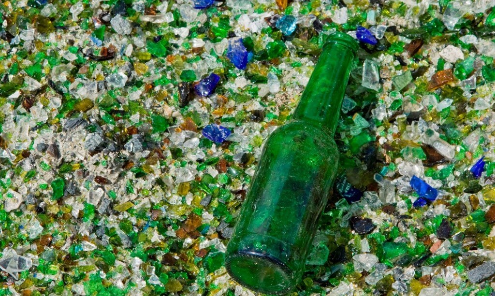
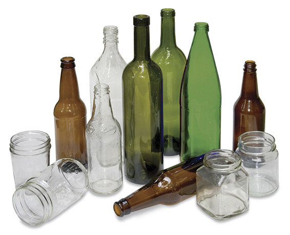

¿Por qué reciclar vidrio?
El vidrio es 100% reciclable y puede reutilizarse infinitas veces sin perder calidad. Al reciclarlo, reducimos la extracción de recursos naturales y el consumo de energía.

Pasos para preparar el vidrio antes de reciclar
- Lava los envases: Limpia los frascos y botellas para eliminar residuos.
- Separa las tapas: Las tapas suelen ser de metal o plástico y deben reciclarse por separado.
- No mezcles tipos de vidrio: Asegúrate de no incluir cerámica, espejos o vidrios rotos.
Tipos de vidrio reciclable
El vidrio reciclable se clasifica en los siguientes tipos:
- Vidrio transparente: Botellas de agua, frascos de alimentos y bebidas.
- Vidrio verde: Botellas de vino, jugos y otros productos en envases de color verde.
- Vidrio ámbar: Botellas de cerveza, medicamentos y envases oscuros para proteger productos.

¿Dónde llevar el vidrio?
El vidrio reciclado se puede entregar en nuestros Centros de Recolección. Contamos con zonas específicas para vidrio en cada punto de acopio.
Beneficios de reciclar vidrio
- Reducción de la extracción de arena y otros recursos naturales.
- Ahorro de energía en la producción de nuevos envases.
- Menor cantidad de residuos en vertederos.
- Reducción de la contaminación del aire y del agua.